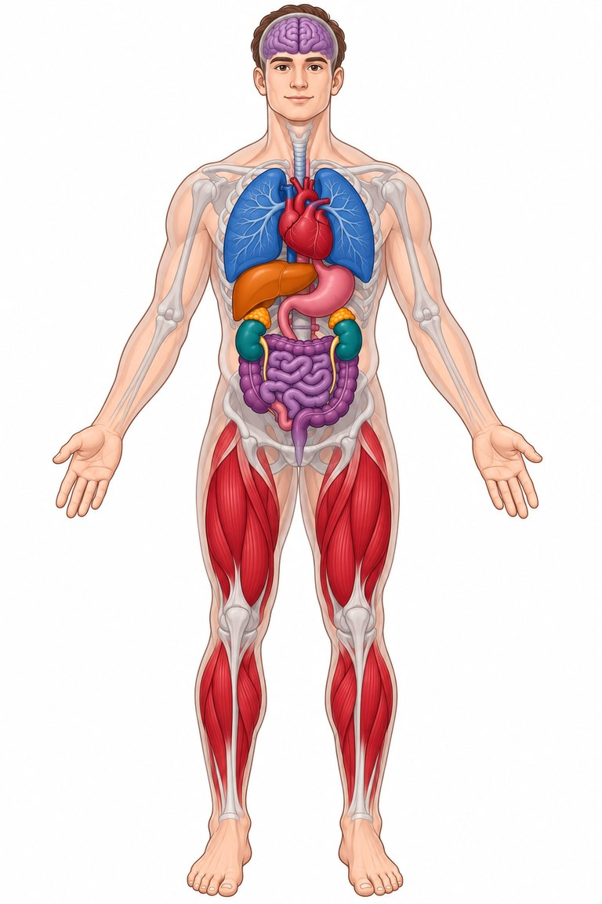

Em vez de decorar, veja acontecer: rode um treino e acompanhe coração, pulmões, músculos, hormônios, rins e temperatura respondendo minuto a minuto, com a explicação de cada mudança.
No topo, a versão Simples mostra menos dados e usa linguagem do dia a dia.

Cada lição tem três passos: entender a ideia, ver acontecendo no corpo e conferir com uma pergunta. Seu progresso fica salvo neste navegador.
Todos os módulos do laboratório. Depois de uma trilha, volte aqui e teste suas próprias hipóteses.
Mecanismos e faixas de valores baseados em livros-texto atuais e em revisões e meta-análises, incluindo atualizações de 2021 a 2026. Veja a lista completa em Referências.
Os números vêm de um modelo didático: mostram a direção e o tamanho aproximado das respostas, não valores exatos de uma pessoa.
Projeto de Lucas Davanzo Botino · Educação Física, UNIRP.
Hormônios em índice relativo de 0 a 100 (0 = mínimo, 100 = máximo fisiológico): mostram a direção e o tamanho da resposta, não a concentração.
Ergoespirometria em rampa gerada pelo modelo, com a pessoa definida no simulador (sexo, idade, altitude, calor, betabloqueador). Rode o teste e veja onde aparecem os limiares.
VT1 (limiar aeróbio): o VE/VO₂ para de cair e começa a subir, enquanto o VE/VCO₂ fica estável. O CO₂ extra do bicarbonato começa a aparecer. Coincide mais ou menos com o lactato saindo do repouso (~2 mmol/L).
VT2 (compensação respiratória): o VE/VCO₂ também sobe. A ventilação passa a compensar a acidose. Próximo de ~4 mmol/L e da máxima fase estável de lactato.
Para que servem: dividem as zonas de treino. Abaixo do VT1, volume fácil; entre VT1 e VT2, ritmo de prova longa; acima do VT2, intervalados curtos.
Por que evitar "limiar anaeróbio": o lactato é produzido mesmo com oxigênio sobrando e serve de combustível para outros tecidos. O termo antigo passa a ideia errada de falta de O₂; a literatura atual prefere limiar de lactato, limiares ventilatórios e domínios de intensidade (Poole et al., 2021; Brooks, 2020).
O que acontece minuto a minuto ao começar e ao parar um exercício de carga constante.
No início, a fosforilação oxidativa demora para acelerar. Enquanto isso o ATP vem da PCr, da glicólise e do O₂ guardado na mioglobina e no sangue: esse "empréstimo" é o déficit.
Depois, o VO₂ fica acima do repouso. A fase rápida repõe PCr e O₂ da mioglobina e hemoglobina; a lenta cobre temperatura, catecolaminas, ventilação e trabalho cardíaco elevados. A remoção do lactato explica pouco do EPOC (Gaesser e Brooks, 1984; Børsheim e Bahr, 2003).
A queda da FC no 1º minuto mede a reativação vagal; menos de 12 bpm após teste de esforço se associa a maior risco (Cole et al., 1999; meta-análise de Qiu et al., 2017).
Contribuição de cada sistema em um esforço máximo, conforme a duração (Gastin, 2001).
Quanto da PCr volta em cada tempo de descanso. Depende do esforço escolhido ao lado: quanto ele esvaziou a PCr e quanto acidificou o músculo.
Tempos dos exemplos aproximados para atletas bem treinados. Recuperação calibrada em Bogdanis et al. (1995): após 30 s de sprint máximo, ~65% da PCr volta em 1,5 min e ~85% em 6 min.
Mexa no ambiente do sangue e veja a curva se deslocar. A tracejada é a curva normal; a faixa laranja mostra o O₂ entregue entre o sangue arterial e o venoso.
Escolha quantas semanas de treino e de pausa. Toque numa variável para destacá-la no gráfico.
Escolha o exercício, a carga e onde a série termina. Veja a pressão arterial repetição a repetição e quais unidades motoras estão trabalhando.
No exercício de força a contração comprime as artérias do músculo e a resistência periférica sobe, ao contrário do aeróbio. Com a manobra de Valsalva a pressão dentro do tórax se soma à arterial: no leg press até a falha, ~320/250 mmHg em média (MacDougall et al., 1985). Ao soltar o ar, cai por alguns segundos.
A cada repetição o músculo fadiga: a mesma carga passa a exigir uma fração maior da força disponível. Mais esforço central e o metaborreflexo (metabólitos acumulados no músculo) elevam pressão e FC. Por isso as últimas repetições são as que mais sobem, mesmo com carga leve.
Pelo princípio do tamanho (Henneman, 1957) entram primeiro as unidades tipo I; as tipo II só quando o esforço sobe. Com 30 a 40% de 1RM a 1ª repetição usa poucas, mas perto da falha quase todas entram. Por isso cargas leves até perto da falha geram hipertrofia parecida com cargas altas (Schoenfeld et al., 2017; Lopez et al., 2021). Teste mudando a repetição.
Para alunos hipertensos ou cardiopatas: expirar na fase concêntrica, evitar Valsalva, terminar a série com 2 ou 3 repetições em reserva e preferir cargas moderadas, com liberação médica. Repare como as repetições em reserva baixam o pico.
Para iniciantes em treino de força progressivo, 2 a 3 vezes por semana. Curvas ilustrativas.
Nas primeiras semanas quase todo o ganho de força é neural: mais unidades motoras ativadas, maior frequência de disparo, melhor coordenação e menos coativação dos antagonistas. A hipertrofia passa a pesar depois de ~6 a 8 semanas (Moritani e deVries, 1979; Sale, 1988; Škarabot et al., 2021). O "inchaço" das 2 a 3 primeiras semanas é em boa parte edema do dano muscular (Damas et al., 2016).
Com o treino, fibras IIx viram IIa. Ao parar, a força se mantém bem nas primeiras semanas e a proporção de IIx pode passar do nível inicial (overshoot; Andersen e Aagaard, 2000).
Preveja a resposta do corpo em situações do simulador, ou teste os conceitos. As respostas trazem a explicação.
Base científica dos mecanismos e das faixas de valores do app, revisada em novembro de 2026. Os trabalhos clássicos continuam citados porque descreveram os fenômenos pela primeira vez; ao lado de cada um está a revisão ou meta-análise mais recente que atualiza o tema.
| Tema | Clássico | Atualização | O que mudou |
|---|---|---|---|
| Carboidrato durante o exercício | ACSM, 2016 (até 90 g/h) | Morton et al., 2026 | Teto pode subir para ~120 g/h em atletas treinados; doses de 120 a 200 g/h ainda sem evidência |
| Exercício no calor e hidratação | Nielsen, 1938; Sawka et al., 2007; Périard et al., 2015 | Périard, Eijsvogels e Daanen, 2021; Cramer et al., 2022 | Revisões amplas sobre termorregulação, hidratação, aclimatação e estratégias de resfriamento |
| Lactato e acidose | Brooks e Mercier, 1994; Robergs et al., 2004 | Brooks, 2020; Poole et al., 2021 | Lactato como combustível e sinalizador; o termo "limiar anaeróbio" é desaconselhado |
| Critérios de VO₂máx | Howley, Bassett e Welch, 1995 | Poole e Jones, 2017 | Critérios secundários pouco confiáveis; recomenda-se fase de verificação |
| EPOC | Gaesser e Brooks, 1984 | Børsheim e Bahr, 2003 | EPOC cresce de forma curvilínea com a intensidade e quase linear com a duração |
| Recuperação da FC | Cole et al., 1999 | Qiu et al., 2017 (meta-análise) | Recuperação lenta associada a ~68% mais risco de mortalidade |
| Hipoxemia induzida pelo exercício | Dempsey e Wagner, 1999 | Dominelli e Sheel, 2019; Peters et al., 2023 | Ocorre também em submáximo e parece mais comum em mulheres |
| Deriva cardiovascular | Coyle e González-Alonso, 2001 | Souissi et al., 2021; Laginestra et al., 2023 | Papel da FC alta reduzindo o enchimento do ventrículo |
| Fluxo para o músculo | Rowell, 1974 | Joyner e Casey, 2015 | Nenhum vasodilatador isolado explica a hiperemia; competição músculo × pressão arterial |
| Adaptações neurais à força | Moritani e deVries, 1979; Sale, 1988 | Škarabot et al., 2021 | Evidência por unidades motoras; local exato da adaptação ainda incerto |
| Carga e hipertrofia | Schoenfeld et al., 2017 | Lopez et al., 2021 | Hipertrofia igual entre cargas até a falha; força maior com cargas altas |
| Proximidade da falha | — | Refalo et al., 2023; Robinson et al., 2024 | Hipertrofia aumenta perto da falha (relação não linear); força quase não depende disso |
| Intervalo entre séries | Schoenfeld et al., 2016 | Singer et al., 2024 | Pequena vantagem para descansos acima de 60 s |
| Destreino | Coyle et al., 1984; Mujika e Padilla, 2000 | Barbieri et al., 2024; Encarnação et al., 2022 | Queda do VO₂máx ligada à perda de volume sanguíneo e plasmático |
| Treino em altitude | Levine e Stray-Gundersen, 1997 | Gore et al., 2013; Deng et al., 2025 | Ganho de hemoglobina; efeito maior com ≥3 semanas |
| Pressão no exercício de força | MacDougall et al., 1985 | Perry e Lucas, 2021 | Valsalva aumenta a pressão e reduz o fluxo cerebral; risco de síncope após a série |
Continuam como referência principal, sem substituto mais recente: Henneman, 1957 (princípio do tamanho); Gastin, 2001 (sistemas energéticos); Bogdanis et al., 1995 (ressíntese de PCr); Spencer et al., 2006 (recuperação ativa); Tanaka et al., 2001 (FCmáx); Wehrlin e Hallén, 2006 (VO₂máx e altitude); Holloszy e Coyle, 1984; Damas et al., 2016; Andersen e Aagaard, 2000; Montain e Coyle, 1992; Poole e Jones, 2012.
Cada variável é calculada por equações simples, calibradas em faixas típicas da literatura para um homem de 20 anos e 70 kg (mulher: 60 kg). VO₂máx 42 mL/kg/min sedentário e 60 treinado; FCmáx por Tanaka; limiares em 50 e 75% (sedentário) ou 65 e 85% (treinado) do VO₂máx; curva da Hb pela equação de Hill (n = 2,7, P50 = 26,8 mmHg). Os hormônios são índices qualitativos. É uma ferramenta para entender direção e mecanismo, não para prescrever.